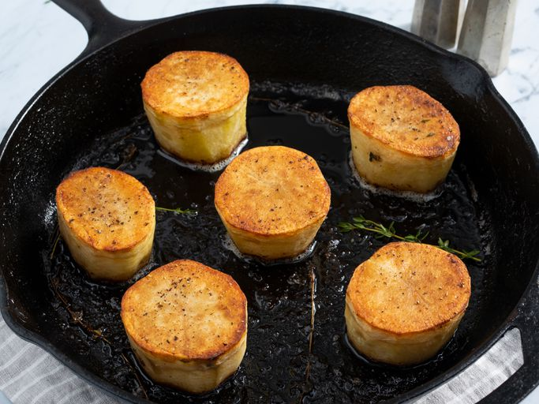

Fondant Potatoes

My fondant potatoes are oven-braised in a buttery, thyme-flavored sauce. The result of this old-school method?
Golden brown potatoes with a crispy crust that remain rich and creamy on the insides. Serve this classic French side dish alongside roast chicken, beef, or fish.
- 3 large whole russet potatoes
- 2 tablespoons high-heat-resitant vegetable oil, such as grapeseed oil
- salt and grouund black pepper to taste
- 3 tablespoons butter
- 4 springs thyme, plus more for garnish
- 1/2 cup chicken broth, or more as needed
- Preheat the oven to 425 degrees F (220 degrees C).
- Cut off ends of russet potatoes. Stand potatoes on end, and peel them from top to bottom with a sharp knife to make each potato into a uniform cylinder. Cut each cylinder in half crosswise to make 6 potato cylinders about 2 inches long.
- Place potatoes into a bowl of cold water for about 5 minutes to remove starch from the outsides.
- Heat vegetable oil in a heavy oven-proof skillet over high heat until it shimmers slightly.
- Pat dry potatoes with paper towels. Place potato cylinders with the best-looking ends into the hot oil. Reduce heat to medium-high, and pan-fry potatoes until well-browned, 5 to 6 minutes. Season with salt and black pepper.
- Flip potatoes and repeat on the other ends. As they cook, use a paper towel held with tongs to carefully blot out the oil from the skillet. Add butter and thyme sprigs to the skillet.
- Pick up a thyme sprig with tongs and use it to paint butter over the top of the potatoes. Cook until butter foams and foam turns from white to a pale tan color. Season with more salt and pepper. Pour chicken stock into skillet.
- Transfer the skillet to the preheated oven and cook until potatoes are tender and creamy inside, about 30 minutes. If potatoes aren't tender, add 1/4 cup more stock and cook for 10 more minutes.
- Place potatoes on a serving platter. Spoon thyme-scented butter remaining in skillet over potatoes. Garnish with thyme sprigs. Let cool about 5 minutes before serving.
More about